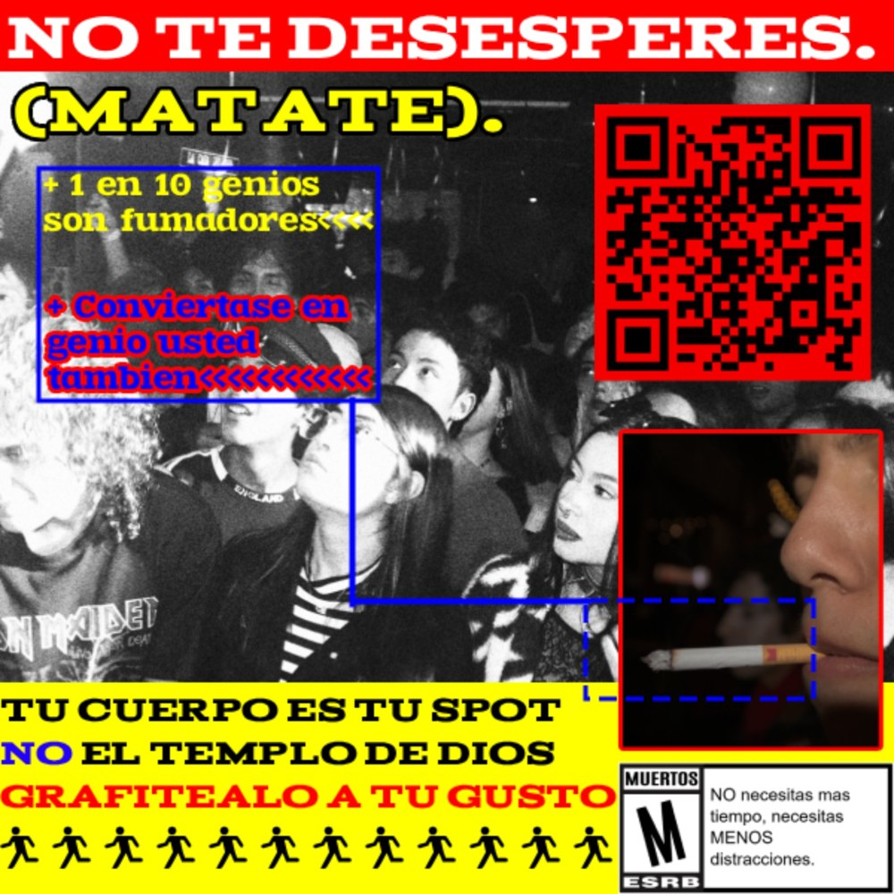

✦ SOY UN MONSTRUO TORPE, PERO NO CRUEL ✦

Jerónimo Valencia tenía 12 años cuando, involuntariamente, marcó su vida para siempre. Jerónimo era un niño de familia acomodada, quien había sido enseñado a recorrer la calle desde muy pequeño. De cierta manera, él era un alien. Jerónimo disfrutaba mucho de los juegos callejeros: jugar con botellas, montar bicicleta y arrojar piedras… Era un niño inocente.
Se encontraba en su colegio, lugar donde ocurrieron los hechos. Mientras se distraía con sus juegos de niño, una blanca y hermosa gata paseaba por la planicie del liceo. Aquel joven y crédulo niño, que estaba a punto de convertirse en un macarra, lanzaba rocas que encontraba en el césped. Entre risas y juegos, observó un ladrillo, seguramente caído de alguna pared cercana.
Con una mirada decidida, aquel futuro punkie tomó el ladrillo entre sus dos manos y miró a la deriva. Sin objetivos que destruir, decidió arrojarlo hacia algún punto nulo del bello patio en el que se encontraba. Sin pensarlo ni dudarlo, accionó su brazo en un fuerte latigazo que concluyó con la despedida de aquel rectángulo de arcilla de sus manos.
Jerónimo solía ser un joven inocente, tal como Mía, una gata movida solo por sus instintos primarios. Esas necesidades pronto se desvanecerían junto con lo que antes era su cabeza.
Un fuerte ruido retumbó en los oídos del niño. Con pasos dudosos y las manos temblorosas, el chinche se acercó al lugar de descanso de su ladrillo. Se encontró con una grotesca y espantosa imagen: el suave pelaje de aquel gato blanco y casero se tornaba de un carnal tono rojo y vacío. Aún respiraba y temblaba; quizás no de dolor ni de miedo, sino de un temblor anómalo, aberrante, un temblor de sufrimiento, horroroso a la vista.
No podía creer lo que había hecho. No era natural que un niño se convirtiera en asesino, y mucho menos que causara daño fuera algo que hubiera planeado para ese día. Se acercaron sus amigos a ver al gato retorciéndose en sus convulsiones. Algunos lloraban, otros gritaban; Jerónimo solo pensaba que había sido aquel gato el que lo dañaba.
Tomó el ladrillo entre sus manos y, con las venas temblando y los ojos llorosos, lo arrojó con fuerza contra el pobre felino. Cesaron sus movimientos involuntarios, y también sus tristes llantos y gritos. Pronto se convirtió en el chico que mató a un gato, y finalmente en “El Gato”, apodo que le recordaría toda su vida la que él mismo había arrebatado.
Fuiste un monstruo. Eres un monstruo. Y siempre serás un monstruo. Quizás uno torpe, pero jamás uno cruel.
← volver a Vistazo